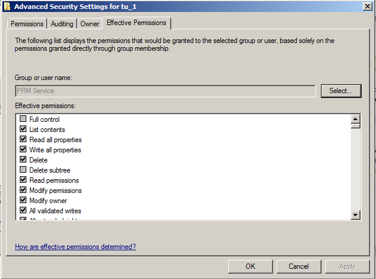
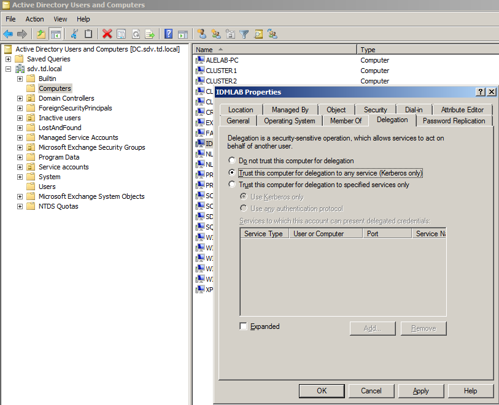

Symptoms
The following error message appears when trying to enroll a user, unlock a user account,
change or reset a password:
No mapping between account names and security IDs was done when enrolling user, changing or resetting password
Cause
Here are possible reasons:
-
The user name is invalid. Make sure that the name is entered correctly and the account
of this user name belongs to the specified domain.
- The service account does not have permissions to read account properties form AD
-
The computer with Netwrix Password Manager installed is not trusted for delegation.
-
The computer with Netwrix Password Manager installed cannot connect to a domain
controller.
Resolution
Verify all possible reasons mentioned above:
-
Check that a username is entered correctly and a user with such account name is present
in AD
-
Check the effective permissions of the Password Manager service account ot the problem
account
-
Select test account in AD Users and Computers and go to
Properties - Security
-
Click Advanced and go to Effective Permissions tab
- Specify the name of the service account and check effective permissions

-
In Active Directory Users and Computers, open the required account`s
Properties dialog, switch to the Delegation tab and
select the
Trust this computer for delegation to any service (Kerberos only)
option.

- Try to delete the computer from your domain and then add it back.